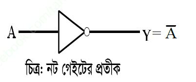

সত্যক সারণি
যে সকল টেবিল বা সারণির মাধ্যমে বিভিন্ন গেইটের ফলাফল প্রকাশ করা হয় অর্থাৎ লজিক সার্কিটের ইনপুটের উপর আউটপুটের ফলাফল প্রকাশ করা হয় তাকে সত্যক সারণি বলে।
প্রতিটি লজিক গেইটের সত্যক সারণি ভিন্ন ভিন্ন হয়। যদি সত্যক সারণিতে n সংখ্যক ইনপুট চলক থাকে তবে ইনপুট সেট হবে 2^n সংখ্যক।
লজিক গেইট
লজিক গেইট হলো একটি ইলেকট্রনিক বর্তনী যা এক বা একাধিক ইনপুট গ্রহন করে এবং শুধু একটি আউটপুট প্রদান করে।
মৌলিক লজিক গেইট :
যেসব গেইট অন্য কোন গেইটের সাহায্য ছাড়া তৈরী করা যায় তাকে মৌলিক লজিক গেইট বলে।
মৌলিক লজিক গেইট তিনটি। যথাঃ
১. অর গেইট:
এটি হচ্ছে একটি যৌক্তিক যোগের গেইট৷ এ গেইটে একাধিক ইনপুট থাকে এবং একটি আউটপুট থাকে।
২. অ্যান্ড গেইট:
এটি হচ্ছে একটি যৌক্তিক গুনের গেইট৷এ গেইটে একাধিক ইনপুট থাকে এবং একটি আউটপুট থাকে।
৩.নট গেইট :
এক্ষেত্রে শুধুমাত্র একটি ইনপুট ও একটি আউটপুট থাকে৷আউটপুট হবে ইনপুটের বিপরীত।

যৌগিক লজিক গেইট:
যেসব লজিক গেইট দুই বা ততোধিক মৌলিক গেইটের সাহায্যে তৈরী করা হয় তাকে যৌগিক লজিক গেইট বলে।
যৌগিক লজিক গেইট ৪ প্রকার। যথা:
১.নর গেইট:
NOR Gate হলো OR গেইট ও NOT গেইটের সমন্বয়ে গঠিত। OR গেইটের আউটপুটকে NOT গেইটের মধ্যে দিয়ে প্রবাহিত করলে নর গেইট পাওয়া যায়।
২. ন্যান্ড গেইট:
NAD Gate হলো AND গেইট ও NOT গেইটের সমন্বয়ে গঠিত। AND গেইটের আউটপুটকে NOT গেইটের মধ্যে দিয়ে প্রবাহিত করলে ন্যান্ড গেইট পাওয়া যায়।
৩. এক্স-অর গেইট:
Exclusive-OR গেইটকে সংক্ষেপে X-OR গেইট বলে৷এটি কোন বেসিক গেইট নয়কারণ এটি অ্যান্ড,অর ও নট গেইটের সাহায্যে তৈরী করা হয়৷ এ গেইটের ইনপুটগুলো অসমান হলে আউটপুট 1 হয় অন্যথায় আউটপুট 0 হবে।এ গেইটে একাধিক ইনপুট থাকে এবং একটি আউটপুট থাকে।
৪.এক্স-নর গেইট:
Exclusive- NOR গেইটকে সংক্ষেপে X-NOR গেইট বলে৷X-OR গেইটের আউটপুটকে NOT গেইটের মধ্যে দিয়ে প্রবাহিত করলে এক্স-নর গেইট পাওয়া যায়।এ গেইটের ইনপুটগুলো অসমান হলে আউটপুট 0 হয় অন্যথায় আউটপুট 1 হবে।এ গেইটে একাধিক ইনপুট থাকে এবং একটি আউটপুট থাকে।
ন্যান্ড ও নর গেইটের সার্বজনীনতা:
যে গেইট দিয়ে মৌলিক গেইটসহ অন্যান্য সকল গেইট বাস্তবায়ন করা যায় তাকে সার্বজনীন গেইট বলে।NAND gate ও NOR gate কে সার্বজনীন গেইট বলা হয় কারণ ন্যান্ড গেইট ও নর গেইট দিয়ে মৌলিক গেইটসহ অন্যান্য সকল গেইট বাস্তবায়ন করা যায়।